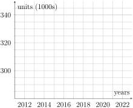

These activities will help you review some graphing skills that you will need in many future lessons. You will also practice find average rates of change, an essential skill for this lesson.
Prep Activity2.3.1.
Let’s review plotting points. Use the axes below for all parts of this activity.
Blank axes. The horizontal axis is labeled \(t\text{,}\) hrs and ranges from 0 to 40. The vertical axis is labeled $ and ranges from 0 to 400.
Figure2.3.1.Money Earned
(a)
If we’re given the coordinates of a point, then we graph the point by going over to the first coordinate on the horizontal axis, and then up or down to the second number on the vertical axis. Graph the points \((10,100)\text{,}\)\((25,200)\text{.}\) You’ll need to estimate the location of 25 on the horizontal axis.
(b)
In this class, we will often need to find the coordinates of a point from a sentence. For example, the sentence
Jakai will make $200 if he works for 25 hours.
describes the point \((25,200)\) on our graph. We know that 25 hours has to be the first/horizontal coordinate because of the labeling of the axes in our graph.
Graph the points described by each of the following sentences:
(i)
Dior will make $300 if she works for 30 hours.
(ii)
Santos worked for 10 hours and made $240.
(iii)
Ramona worked for 35 hours and made $370.
(c)
Write a sentence explaining why it doesn’t make sense to connect these points in this context.
Prep Activity2.3.2.
We will sometimes be given points in a data table. Tables might be organized vertically, with named columns, or horizontally, with named rows. Look for the row and column names to find the horizontal and vertical coordinates of the points. Here are the points we’ve already graphed, arranged in a table in two different ways.
Hours Worked
Money Earned ($)
10
100
25
200
30
300
10
240
35
370
Table2.3.2.Points arranged in a vertical table
Hours Worked
10
25
30
10
35
Money Earned ($)
100
200
300
240
370
Table2.3.3.Points arranged in a horizontal table
Add the points from the table below to the graph.
Table2.3.4.New points to graph
Hours Worked
15
20
Money Earned ($)
180
320
Prep Activity2.3.3.
The table below shows the number of housing units in Denver. 1
Data from Data Commons 2024, US Census Bureua, electronic dataset, Data Commons, viewed 2 Jul 2024, https://datacommons.org
Year
Housing Units (1000s)
2011
284
2012
285
2013
288
2014
291
2015
294
2016
299
2017
307
2018
314
2019
322
2020
306
2021
335
2022
345
Table2.3.5.Housing Units in Denver

Blank axes. The horizontal axis is labeled years and ranges from 2011 to 2023. The vertical axis is labeled units (1000s) and ranges from 280 to 350.
Figure2.3.6.Housing Units in Denver
(a)
Graph the points and connect them. You’ll need to estimate the exact location of each dot! Why does it make sense to connect the points in this context?
(b)
Notice that this data set says that it is giving us "Number of Housing Units (1000s)." This is common when working with large numbers. To find the number of housing units, we need to multiply the given values by 1000. So, for example, there were 284,000 housing units in 2011. How many housing units were there in 2022?
Prep Activity2.3.4.
We learned in Worksheet 1.2 how to find average rates of change. A useful writing convention to be aware of is that when we say "the average rate of change IN (some quantity)", then (some quantity) is the output quantity and goes in the numerator of the fraction. Find each of the following:
(a)
The average rate of change in the number of housing units in Denver between 2012 and 2016.
(b)
The average rate of change in the number of housing units in Denver between 2018 and 2020.
(c)
The average rate of change in the number of housing units in Denver between 2018 and 2021.
Prep Activity2.3.5.
You’ll need to be able to do the following things for this lesson. Rate how confident you are on a scale of 1 - 5 (1 = not confident and 5 = very confident).
Table2.3.7.
Skill or Concept: I can …
Rating from 1 to 5
Plot a point on a graph.
Find the coordinates of a point from a sentence or table.